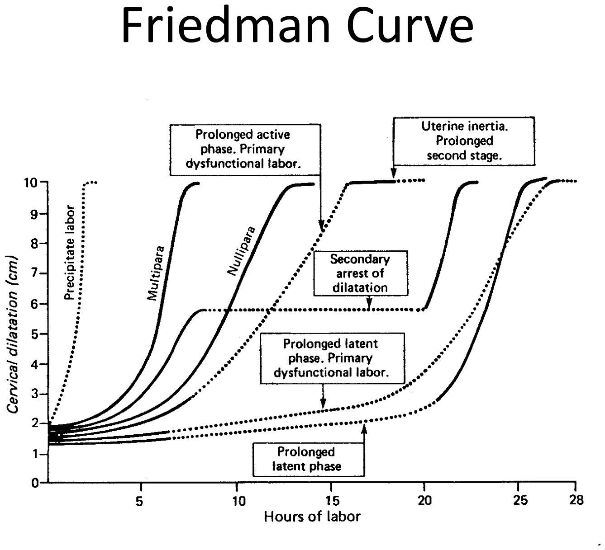
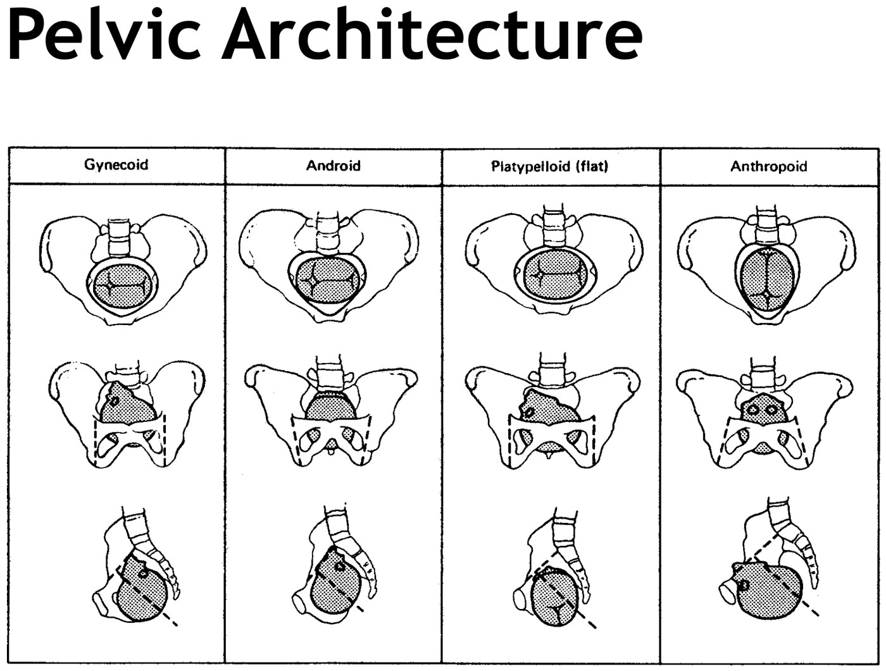
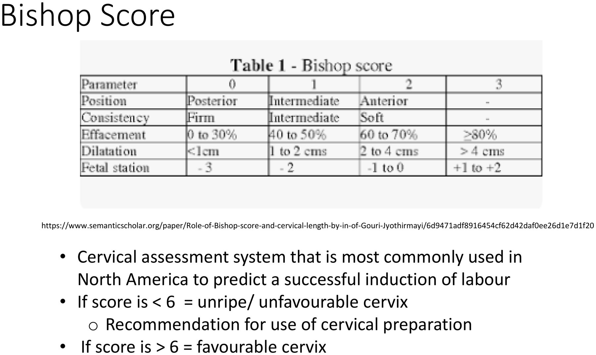
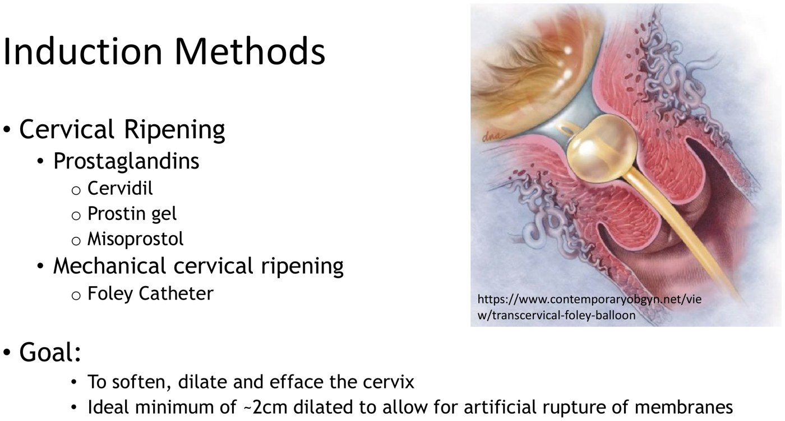
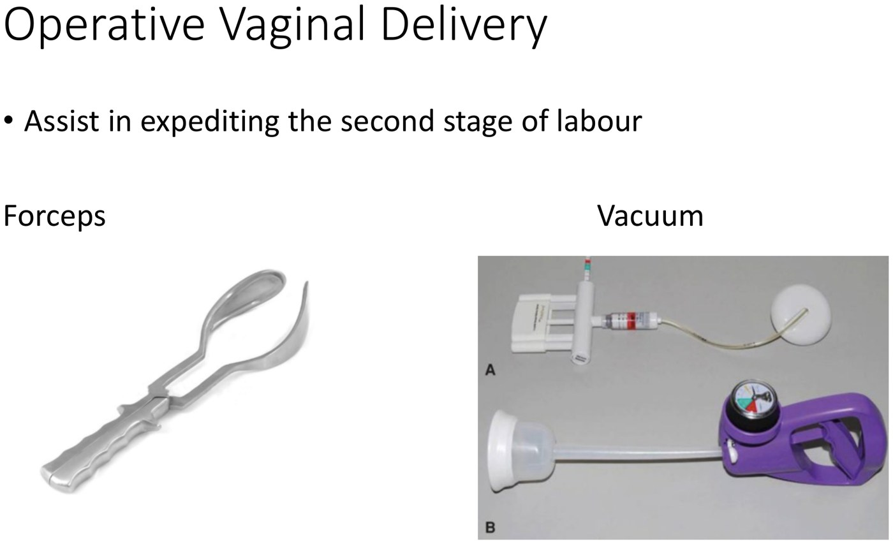
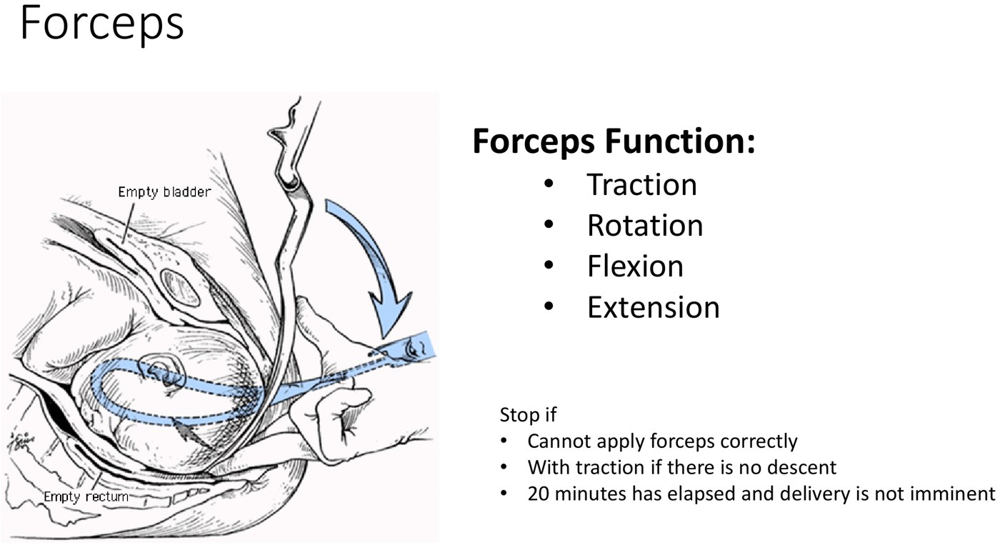
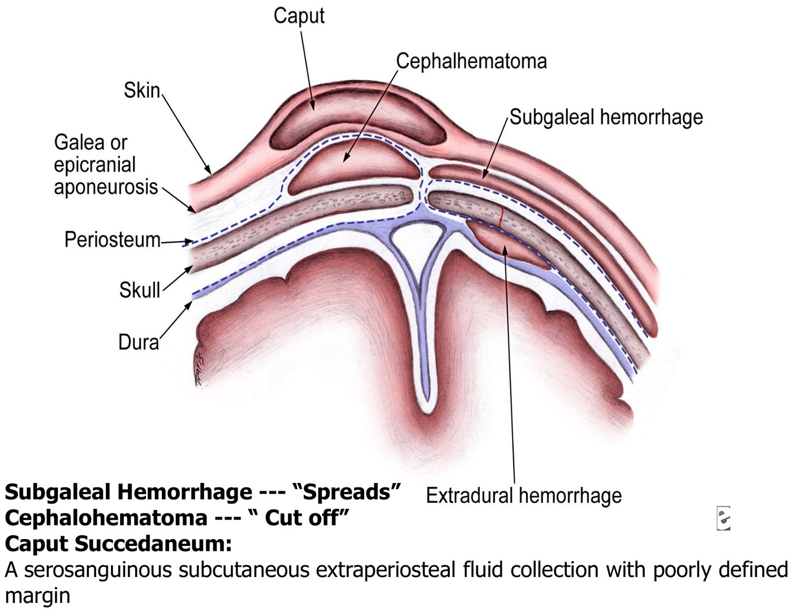
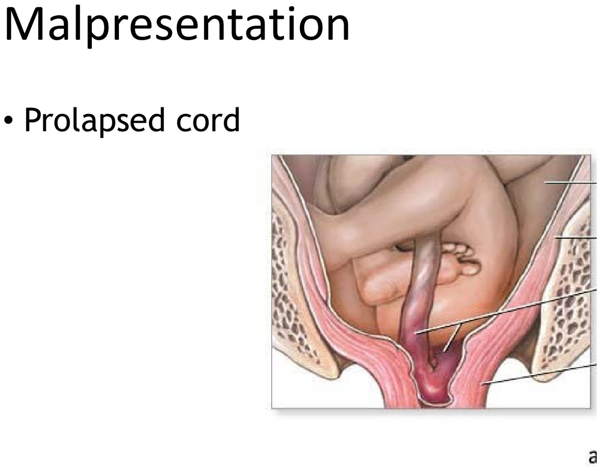
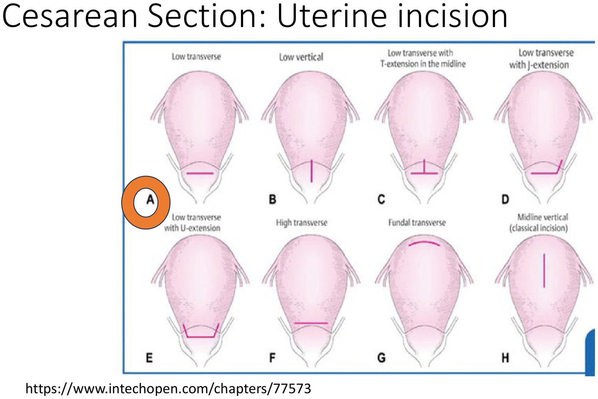
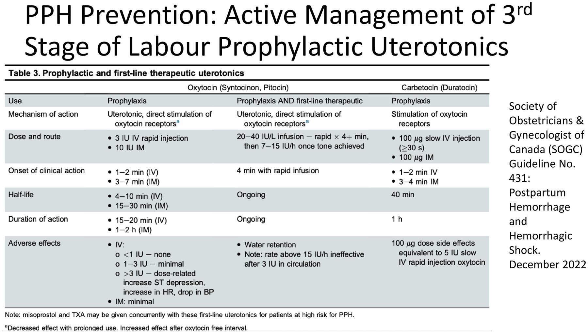

Abnormal Labour & Birth
- Labour dystocia means abnormally slow progress: failure to progress (dilatation) or failure to descend. It is the #1 reason for caesarean. It is not shoulder dystocia, which is an emergency.
- The 4 Ps: Power (fix it with ARM and oxytocin), Passage (can't change it), Passenger (ECV, rotation; size can't change → CPD → caesarean), Psyche (continuous support helps).
- Induction: same contraindications as labour. Bishop < 6 → ripen first (prostaglandins or a Foley), then ARM at about 2 cm, then oxytocin.
- Operative vaginal delivery needs full dilatation, an engaged vertex and a known position. The #1 indication is an abnormal fetal heart tracing. A vacuum is not for rotation.
- TOLAC is for 1–2 prior low transverse caesareans, with an OR within 30 min and > 18 months since the last one. Success is 60–80%. Never after a classical or T incision. The first sign of rupture is an abnormal FHR.
- PPH = > 500 mL vaginal, > 1000 mL caesarean, or any loss causing instability. Causes are the 4 Ts, and tone (atony) is the most common. Prevent it by actively managing the third stage. Treat it: help and ABCs → bimanual massage → uterotonics or look for trauma → TXA → escalate.
- Abnormal Labour, part 1 — dystocia, the 4 Ps, induction & augmentation ▶10:43
- Abnormal Labour, part 2 — operative delivery, caesarean & TOLAC ▶9:50
- Postpartum Hemorrhage & Hemorrhagic Shock ▶11:25
Learning Objectives
- Define labour dystocia; list the 4 Ps that impact labour; describe which components are modifiable and how.
- Describe the process of an induction of labour; list its reasons; describe a preinduction assessment; explain two ways of cervical ripening; explain the use of oxytocin in labour dystocia.
- List options and indications for operative vaginal birth; list indications for and complications of C-section.
- Describe inclusion and exclusion criteria for TOLAC; list the benefits of a successful VBAC and the complications of TOLAC.
- Define postpartum hemorrhage; describe its etiology (4 Ts); list its complications; describe the approach to an acute PPH; become familiar with the medications used to prevent and treat it.
Dr. Laura Sovran, general obstetrics & gynecology. Four recordings with four decks, 75 minutes in total, though Elentra lists 36. It picks up where 6.4 leaves off. Dr. Sovran is explicit: “if it's not in the objectives, it will not be examined.” The details she labels FYI are marked that way below.
Labour Dystocia and the 4 Ps
14-minute recording · why labour stalls, and which parts you can fix.
Labour Dystocia
Abnormally slow progress through labour. It is the most common reason given for a caesarean. On the ward you'll hear it as:
| Term | What stalls | Example |
|---|---|---|
| Failure to progress | Cervical dilatation (first stage) | Reaches 7 cm, then no change at all over 2, 4, 6, even 8 hours |
| Failure to descend | Descent of the head (second stage) | Fully dilated, but the head never comes down into the pelvis |

The head is delivered but the anterior shoulder is stuck behind the pubic bone. It is an obstetric emergency: without immediate maneuvers to free the shoulder, the baby can die. The longer it takes, the worse the injuries: fractures, brachial plexus injury, neurological injury, fetal death. The maneuvers are clerkship material.
The 4 Ps
When an abnormal labour pattern is identified, assess each P and fix what can be fixed.
| P | What it is | Modifiable? | How |
|---|---|---|---|
| Power | Contractions, plus maternal expulsive effort when pushing | Yes | Contractions: (1) artificial rupture of membranes (ARM), then (2) IV oxytocin in metered doses. Pushing: oxytocin if not already on; coach and encourage; adequate analgesia. |
| Passage | The bony pelvis | No | Can't be altered without breaking bone. The coccyx sometimes fractures on its own during birth (never deliberately). Symphysiotomy, cutting the pubic symphysis to open the pelvis “like a book”, is a textbook last resort for severe shoulder dystocia. |
| Passenger | Fetal presentation, position and size | Partly | Presentation: external cephalic version for breech (or transverse), turning the baby through the abdomen, usually before labour. Position: manual or forceps rotation to occiput anterior. Size: can't be changed; induction may be considered if the baby is suspected to be large and it's appropriate. If the baby won't fit, that's CPDCephalopelvic disproportion: the fetal head is too large for the maternal pelvis. It can only be diagnosed by a trial of labour, and it means a caesarean. → caesarean. |
| Psyche | Support in labour, emotional well-being | Yes | Continuous support from a partner, nurse, midwife or physician improves maternal and fetal outcomes and raises the chance of a spontaneous vaginal birth. Add pain control as she wishes, which doesn't mean an epidural for everyone. |
Severe pain is a high-epinephrine state. The uterus may contract less effectively, and a woman in extreme pain can't push well. Support and analgesia address both, so psyche is a modifiable P, not a soft extra.

Induction and Augmentation
15-minute recording · starting labour, and speeding it up.
Who Can Be Induced, and Why
Contraindications to induction are the contraindications to labour (6.4): placenta previa, vasa previa, cord presentation; abnormal lie (transverse); a prior classical caesarean or uterine surgery entering the cavity (e.g. a myomectomy); active genital herpes; and invasive cervical cancer.
Indication: any condition that puts the mother or fetus at more risk by continuing the pregnancy. Examples, not an exhaustive list:
| Group | Indications |
|---|---|
| Timing | Post-dates: beyond 42 weeks the risk of intrauterine fetal death rises, so induce before 42 |
| Maternal | Preeclampsia / gestational hypertension (5.16); diabetes (gestational or pre-existing); cardiac disease; significant cardiac, respiratory, renal or hematologic conditions; intrahepatic cholestasis of pregnancy |
| Fetal | Fetal growth restriction (6.2); oligohydramnios; alloimmunization with fetal anemia (e.g. Rh, 5.14); fetal demise; twins |
| Membranes / placenta | Prelabour rupture of membranes (including PPROM); placental abruption |
| “Social” | Increasingly, the ARRIVE indication below |
The ARRIVE trial
ARRIVE is one of the indications at LHSC. It randomized low-risk nulliparous women to induction at 39+0 to 39+4 weeks or to waiting. Dr. Sovran calls the 39th week the sweet spot between maternal and fetal risk. Elective induction at 37–38 weeks brings more newborn transition problems. Spontaneous birth at those weeks is fine; it's inducing without a reason that isn't. It isn't offered to everyone yet because the system couldn't cope: everyone from 39 to 42 weeks would need inducing at once.
| Outcome (Grobman et al., NEJM 2018) | Induction | Waiting | Result |
|---|---|---|---|
| Caesarean | 18.6% | 22.2% | Lower (RR 0.84, 0.76–0.93) |
| Hypertensive disorders of pregnancy | 9.1% | 14.1% | Lower (RR 0.64, 0.56–0.74) |
| Perinatal death or severe neonatal complications | 4.3% | 5.4% | Not significantly different (RR 0.80, 0.64–1.00) |
| Perinatal deaths | 2 | 3 | Far too few to show a difference |
Flagged: the slide credits ARRIVE with “reduced stillbirth”. The trial did not show that. There were 2 versus 3 perinatal deaths, and the perinatal composite missed significance. The lower caesarean and hypertensive-disorder rates are real. Checked against the trial's registered results (NCT01990612) and the NEJM abstract, 2026-09-30.
The Preinduction Assessment
| Check | Why |
|---|---|
| Dates / gestational age | So a presumed 39 weeks isn't really 37 |
| Fetal position | Vertex is the norm. Breech inductions happen rarely, and only with experienced providers. A transverse lie can't be induced. |
| Estimated fetal weight, if one exists | A third-trimester EFW isn't routine; if there is one, is the baby very big or small? |
| Cervical exam | Dilatation, effacement, position, consistency, station: does the cervix need ripening? |
| Consent | Explain the indication and how the induction will go |
A favourable (ripe) cervix means a shorter induction and a higher chance of vaginal birth. Dr. Sovran's analogy is a peach: an unripe, hard peach is almost impossible to tear open; a ripe one pulls apart around the pit. Success is also more likely with multiparity, ruptured membranes, lower BMI, greater height, a smaller baby, and no placental-insufficiency comorbidity such as preeclampsia.

Two Stages: Ripen, Then Start Labour
Stage 1 — ripen the cervix
Goal: soften, efface and dilate the cervix to about 2 cm, enough to break the waters.
| Chemical: prostaglandins | Mechanical: Foley catheter | |
|---|---|---|
| Options | Cervidil, an insert behind the cervix “like a shoestring” that can be pulled out · Prostin gel, squirted into the vagina, can't be removed · misoprostol tablets, vaginal or oral | A balloon catheter through the cervix (a double-balloon version exists but costs more and isn't used at LHSC) |
| Can it start labour? | Yes — less control over whether she goes into labour | Rarely. It releases some natural prostaglandins, but the pattern is more predictable. |
| End point | A ripe cervix | When the balloon falls out, she's usually about 2 cm |

Stage 2 — start the contractions
- Artificial rupture of membranes (a small hook through the dilated cervix). Oxytocin, natural or synthetic, works better once the waters are broken, and sometimes ARM alone is enough.
- If contractions don't follow: IV oxytocin, titrated slowly up to strong contractions every 2–3 minutes. What matters is contractions that change the cervix, since that is the definition of labour.
During a contraction there is little or no blood flow to the placenta. The fetus reoxygenates between contractions. Too many contractions (tachysystole) shorten those rests and cause fetal heart rate abnormalities. So on oxytocin both the FHR and the number of contractions are monitored continuously (6.4). If you can't trace the contractions, for example with a high BMI, place an intrauterine pressure catheter.
| Augmentation | For failure to progress in a labour that has already started |
|---|---|
| 1. | ARM (if the waters are intact) |
| 2. | Oxytocin infusion, titrated to a good contraction pattern and cervical change. It also strengthens contractions for pushing (power). |
| 3. | IUPC if the contractions can't be traced |
Operative Delivery and TOLAC
31-minute recording · forceps, vacuum, caesarean, and labouring after one.
Operative Vaginal Delivery
If the baby can't be pushed out, there are only two other ways: assist it out of the vagina (forceps or vacuum) or caesarean. Both count as “operative births”. An operative vaginal delivery expedites the second stage: the cervix is fully dilated and the head is low.

Forceps and vacuum. The vacuums shown are the hand-held Kiwi (A) and a softer cup (B).
Forceps can do four things: traction, rotation, flexion, extension. A vacuum essentially only pulls. Slides from the deck.| Indications | |
|---|---|
| Fetal | Atypical or abnormal fetal heart tracing — the #1 reason · malposition (occiput transverse or posterior), which can be rotated |
| Maternal | Medical reasons to avoid Valsalva (cerebrovascular disease, cardiac conditions) · maternal exhaustion / ineffective pushing |
| Labour | Prolonged second stage |
| Contraindications | |
|---|---|
| Absolute | Non-vertex (face or brow) · unengaged head · incomplete dilatation · clinical CPD · fetal bleeding or bone-demineralization disorder (risk of intracranial bleeding and fractures) · any contraindication to vaginal birth |
| Relative | Unfavourable attitude of the head · rotation > 45° from OA or OP: contraindicated for vacuum, not for forceps · mid-pelvic station · prematurity |
FYI, not examinable: the 15 prerequisites. These are consent; no fetal contraindication; analgesia; an empty bladder; ruptured membranes; vertex, fully engaged, fully dilated; adequate contractions; no CPD; the exact position of the head known; a skilled operator; backup staff; a backup plan (caesarean); and the risks weighed against the alternative. The one thing she says to know for the exam: a vacuum is not for rotation.
| Vacuum | Forceps | |
|---|---|---|
| Can | Traction; can correct deflexion. Not rotation. | Traction, rotation, flexion, extension |
| Stop if (FYI) | No progress after 3 contractions, 3 pop-offs, or > 20 min without imminent delivery | Can't apply the blades correctly · no descent with traction · 20 min without imminent delivery |
| Mother | Lacerations, hematoma | More soft-tissue lacerations than vacuum |
| Baby | Scalp lacerations and bruising, cephalohematoma, subgaleal hemorrhage, skull fracture, intracranial and retinal hemorrhage, jaundice, Erb's palsy, 6th and 7th nerve palsies | Facial lacerations (~1%), cephalohematoma (~1%), intracranial hemorrhage (~0.1%), retinal hemorrhage, skull fracture; facial nerve palsy and eye trauma more than vacuum |
The mother still has to push. The instrument only assists. Used inappropriately or by an inexperienced operator, both put the baby at real risk.

Caesarean Section
| The four most common indications | Together, 70% of caesareans |
|---|---|
| 1. Dystocia | Failure to progress or descend |
| 2. Atypical or abnormal fetal heart rate | — |
| 3. Previous caesarean | Elective repeat |
| 4. Malpresentation | Breech or transverse |
Other indications: abnormal placentation (placenta previa, vasa previa, accreta spectrum, 6.3) · mechanical obstruction (a fibroid or mass in the lower segment or cervix) · maternal infection (active HSV at delivery; HIV) · multiple gestation · cervical cancer · fetal congenital anomalies.
Breech (types in 6.4) is more likely with uterine anomalies, pelvic tumours, placenta previa, hydrocephalus or anencephaly, oligohydramnios, a lax uterus (multiparity, polyhydramnios, multiple fetuses), and a previous breech.
Cord prolapse

Overt cord prolapse: a loop of cord comes ahead of the presenting part. In the vagina it feels like a pulsating rope. Slide from the deck.| Type | Cord is |
|---|---|
| Overt | Palpable or visible ahead of the presenting part |
| Occult | Beside the presenting part, compressed with each contraction |
| Cord presentation | Below the presenting part before the membranes rupture |
Risk factors: malpresentation (transverse, unstable lie, footling breech), polyhydramnios, prematurity, grand multiparity, pelvic masses, CPD or an unengaged head, multiple gestation, PPROM (6.1), male sex.
Whoever finds it gets on the bed and pushes the presenting part up off the cord, and keeps it there. The patient goes straight to the OR for an emergency caesarean. That person stays under the drapes, hand in place, until the baby is delivered through the incision.
Incisions
| Skin | Use |
|---|---|
| Vertical midline | Perhaps faster, less blood loss. Crash caesareans, previous midline scar, obesity, bleeding disorders. |
| Pfannenstiel (low transverse) | The standard. More cosmetic, less dehiscence, less pain. |

Risks of a caesarean
| Risk | Numbers from the deck |
|---|---|
| Infection | Endometritis 4–5% (35–40% without antibiotics); wound infection 2.5–16% |
| Hemorrhage | Average loss 800–1000 mL; PPH is > 1000 mL; 1–2% need transfusion |
| Bladder injury | ~1%. The most commonly injured organ, and more likely after several caesareans (scarring). |
| Thromboembolism | 4× higher than a vaginal birth |
| Mortality | 0.53 per 1000 caesareans vs 0.04 per 1000 vaginal births: low, but higher |
| Future placentation | Previa (baseline ~1/200) 2–3× more likely; accreta 5× |
| Other | Injury to bowel, ureters, nerves, vessels; more pain; longer recovery; 2–3 days in hospital; anesthetic risks |
Trial of Labour After Caesarean (TOLAC)
After a caesarean, the next pregnancy is a choice: a trial of labour (TOLAC) or an elective repeat caesarean. A successful TOLAC is a VBAC (vaginal birth after caesarean). Overall success is 60–80%.
| Offer TOLAC when all of these hold | Don't, if any of these |
|---|---|
|
|
| Success more likely | Success less likely |
|---|---|
|
|
Why try? A successful VBAC means a shorter stay, less VTE, less pain, less blood loss and transfusion, fewer neonatal breathing problems, less operative injury, less infection, and less previa, accreta and hysterectomy in future pregnancies.
The risk: uterine rupture
| Deck | |
|---|---|
| Scar separation (dehiscence) — the old scar splits, not fully ruptured | 1/200 = 0.5% |
| True rupture — full-thickness separation of the myometrium, fetal parts extruded; catastrophic | 1/1000 = 0.1% |
| Rupture after a classical or T incision | 4–9% — why they never labour |
Flagged: the deck's 0.1% for true rupture is low. The recording itself gives 0.2–1.5% after one low transverse scar. The largest prospective study, Landon et al. (NEJM 2004, 17,898 trials of labour), found symptomatic rupture in 0.7%. Checked 2026-09-30. For the exam, the deck's figures are what was taught. For counselling, “under 1%” is closer.
Risk rises with: scar type and number, a short interval between deliveries, induction or augmentation, macrosomia, multiparity, dystocia.
| Rupture of an unscarred uterus | Very rare |
|---|---|
| Causes | Trauma (car crash), prolonged labour, uterotonics (oxytocin) |
| Risk factors | High parity, uterine anomaly, advanced maternal age, dystocia, macrosomia, multiples, short interpregnancy interval |
| Signs of uterine rupture | |
|---|---|
| 1. | Atypical or abnormal fetal heart rate — the first sign |
| 2. | Contractions stop |
| 3. | Loss of the presenting part on exam — the head that was low is gone |
| 4. | Abdominal pain; with an epidural, shoulder-tip pain (blood irritating the diaphragm) |
| 5. | Vaginal bleeding, hematuria |
| 6. | Maternal cardiovascular instability — tachycardia, hypotension |
| 7. | Fetal parts palpable through the abdominal wall |
Consequences: perinatal death or neurological injury. For the mother: death, transfusion, peripartum hysterectomy, and injury to bowel, bladder, ureters, vessels and nerves. This is why a TOLAC needs close monitoring and an OR ready.
Postpartum Hemorrhage
15-minute recording · the baby is out, and she's bleeding.
Definition and Scale
| PPH is | |
|---|---|
| > 500 mL | after a vaginal birth |
| > 1000 mL | at caesarean |
| Any amount | that causes cardiovascular instability |
| Early vs late | Within 24 h vs 24 h to 12 weeks |
- An obstetric emergency and one of the top 5 causes of maternal death, in low- and high-resource settings alike
- Canada: 5.6 per 100 deliveries, closer to 10% when blood loss is measured by weight. Estimates are poor, so weigh the soaked pads and towels.
- Rising, with uterine atony the main driver
- 60% of women who have a PPH had identifiable risk factors before delivery, so assess risk antenatally and in labour
The 4 Ts
| T | Mechanism | Risk factors |
|---|---|---|
| Tone (atony) — the #1 cause | The uterus doesn't contract down on the placental-bed vessels | Overdistension: polyhydramnios, multiples, macrosomia · Exhaustion: precipitous or prolonged labour, high parity, prolonged oxytocin, general anesthesia, anemia · Infection: prolonged rupture of membranes, chorioamnionitis · Dysfunction: fibroids, placenta previa |
| Tissue | Something left inside stops the uterus contracting | Retained membranes; incomplete placenta (succenturiate lobe, morbidly adherent placenta, i.e. the accreta spectrum); blood clots |
| Trauma | Something is torn | Lacerations of cervix, vagina, perineum (precipitous or operative delivery, episiotomy extension, malposition) · hematoma · extension at caesarean (malposition, a deeply engaged head, prolonged second stage) · uterine rupture (previous surgery) · uterine inversion (nullipara with a fundal placenta; excessive cord traction) |
| Thrombin | The blood can't clot | Pre-existing: von Willebrand disease, hemophilia A, ITP · Acquired in pregnancy: DIC, preeclampsia / HELLP, fetal demise, severe infection, abruption, amniotic fluid embolism · Iatrogenic: therapeutic anticoagulation |
The uterus stops bleeding mainly by contracting: the muscle fibres clamp the spiral arteries shut. The lower uterine segment has far fewer muscle fibres. When a placenta that implanted there comes off, there's little muscle to squeeze the vessels. Women with a previa are at high risk of PPH and transfusion because of where the placenta was (6.3).
The deck writes the pre-existing platelet disorder as “idiopathic thrombotic purpura”. ITP stands for immune (idiopathic) thrombocytopenic purpura.
Complications
| Complication | Note |
|---|---|
| Maternal death | — |
| Iron-deficiency anemia | — |
| Sheehan's syndromeIschemic necrosis of the pituitary after severe postpartum hemorrhage and hypotension. The pituitary is enlarged in pregnancy and vulnerable; failure to lactate is often the first sign, followed by other hypopituitary features. | Pituitary infarction → classically failure to lactate (pituitary failure is covered in 3.2) |
| Blood-product exposure | And its consequences |
| Coagulopathy / DIC | Consumptive, as in 6.3 |
| Organ damage | From hypotension and shock (6.6) |
Prevention Is Key
- Find and treat anemia in pregnancy early, and follow up the response. A non-anemic woman has more reserve to lose.
- Identify risk factors before delivery: go through the antenatal history.
- Active management of the third stage: a prophylactic uterotonic after every birth, vaginal or caesarean (6.4). In Canada that is oxytocin or carbetocin (a long-acting oxytocin analogue). Misoprostol is used in low-resource settings because it is stable at room temperature.
- Recognize and treat PPH early.

Managing an Acute PPH
“ORDER”: Oxygenate, Restore circulating volume, Drugs, Evaluate the response, Remedy the cause. All at once, with many hands. Call nurses, anesthesia and more help early.
| Beyond drugs | What it is |
|---|---|
| Tamponade | Uterine packing, or a Bakri balloon inflated inside the uterus to compress the bed |
| Compression sutures | At laparotomy, sutures that squeeze the uterus closed |
| Ligation / embolization | Tie off the uterine or internal iliac arteries, or have interventional radiology embolize the uterine arteries |
| Hysterectomy | The last resort |
![SOGC guideline 431 table 2, classification and management of PPH by stage. Stage 0: under 500 mL vaginal or under 1000 mL caesarean, normal BP, HR under 100, asymptomatic, active or physiologic management of the third stage. Stage 1 mild: 500 to 1000 mL vaginal or 1000 mL caesarean, normal BP, HR under 110, often asymptomatic, therapeutic first-line uterotonic. Stage 2 moderate: 1000 to 1500 mL, postural hypotension with systolic 80 to 100, HR over 110, second-line uterotonic and look for other causes. Stage 3 severe: over 1500 mL, systolic under 80, HR over 120, diaphoresis, delayed capillary refill, tachypnea, pallor, oliguria or anuria, decreased consciousness, agitation, cool extremities, full resuscitation protocol.](../../../../assets/images/week-6/abnormal-labour/pph-stages.jpg)
| Agent (familiarity only) | What it is | Watch out for |
|---|---|---|
| Oxytocin (Syntocinon) | Oxytocin-receptor agonist: prophylaxis and first-line treatment | Large rapid IV doses: tachycardia, hypotension, ST depression; water retention |
| Carbetocin (Duratocin) | Long-acting oxytocin analogue — prophylaxis | — |
| Ergonovine (ergometrine) | Second-line; an ergot alkaloid acting on adrenergic and dopaminergic receptors | Hypertension (so not in preeclampsia); HIV protease inhibitors and NNRTIs; macrolides |
| Carboprost (Hemabate, PGF2α) | Second-line prostaglandin, IM or intramyometrial | Asthma (bronchospasm); diarrhea |
| Misoprostol (Cytotec) | Prostaglandin E1 analogue: uterine contraction; room-temperature stable | Fever, shivering |
| Tranexamic acid (TXA) | Antifibrinolytic: helps clots hold | — |
Built from Dr. Laura Sovran's “Abnormal Labour” module: four recordings (14, 15, 31 and 15 min) and their four decks (15, 15, 43 and 19 slides). The module has no knowledge checks. All images are slides from those decks, plus the abnormal-labour Friedman graph borrowed from her Normal Labour deck. The PPH flowchart is drawn for these notes from her six numbered steps. The agent table is condensed from the SOGC tables in the deck: no doses, and the cautions as printed. Checked against primary sources, 2026-09-30: the ARRIVE results (Grobman et al., NEJM 2018, and the trial's registered results, NCT01990612), which do not support the slide's “reduced stillbirth”; and the uterine-rupture rate after one low transverse scar (Landon et al., NEJM 2004: 0.7%), against the slide's 0.1%. The slide's “idiopathic thrombotic purpura” is written as ITP. Auto-captions garbled TOLAC as “Tilak”, VBAC as “V back” and “feedback”, Valsalva as “those salver”, symphysiotomy as “simple physiognomy”, external cephalic version as “external safe conversion”, Pfannenstiel as “fin and steel”, dehiscence as “dizziness”, endometritis as “endometriosis”, subgaleal as “subglacial”, Erb's as “herpes”, Bakri as “battery”, carboprost as “cut the prostate”, Sheehan as “sheen” and oligohydramnios as “legal headroom Neos”; the slides were followed.